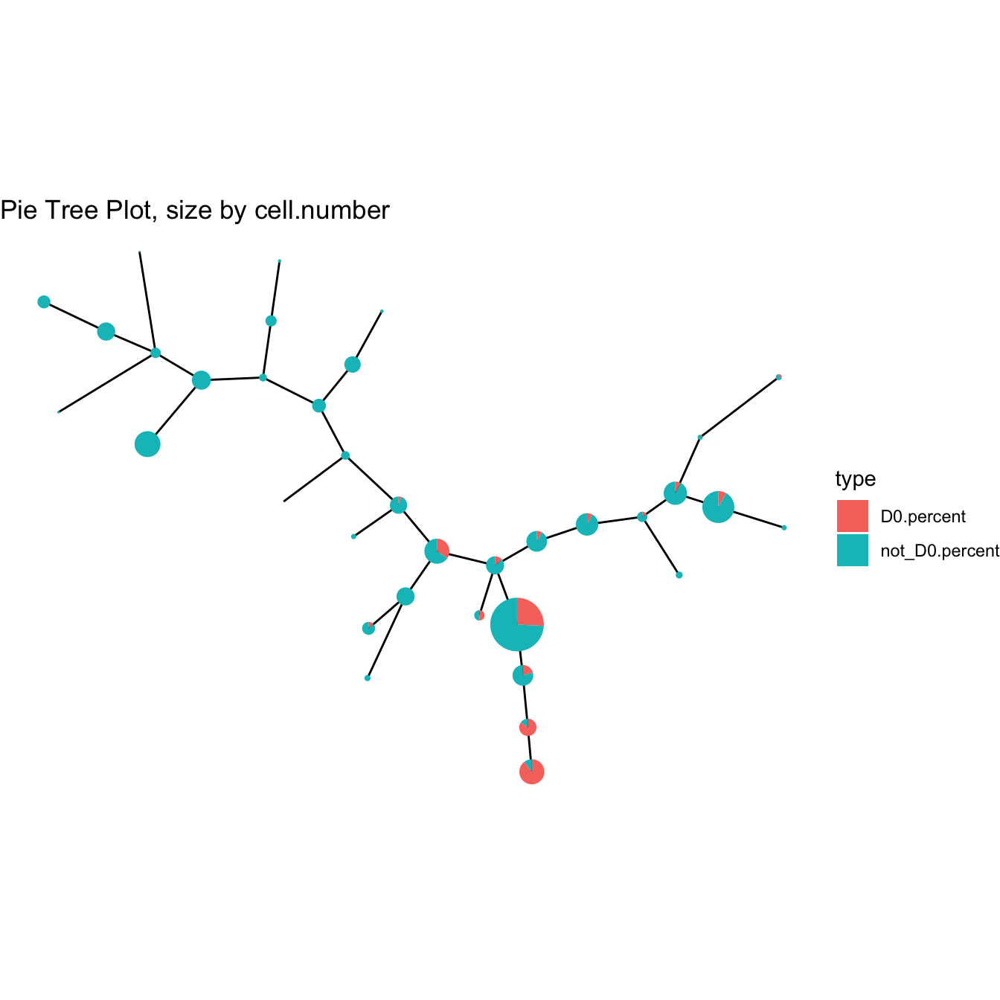
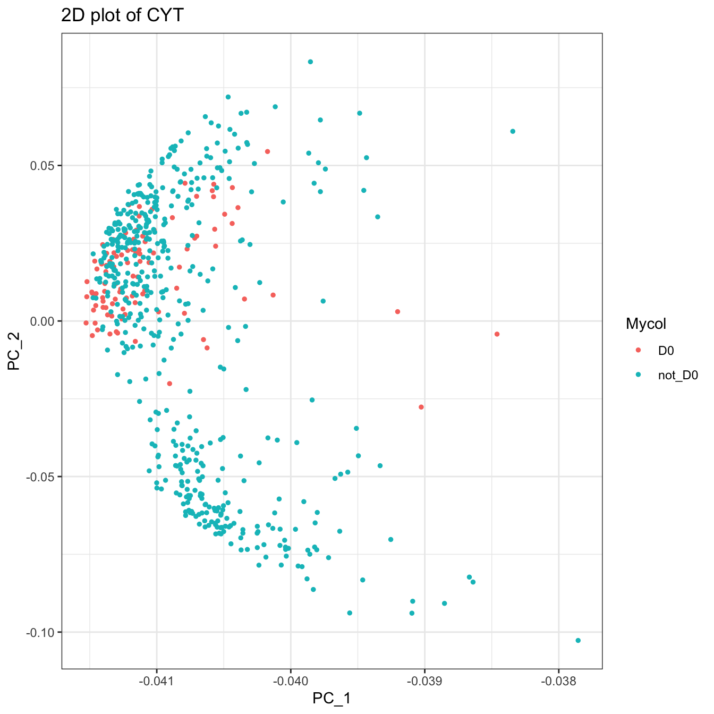
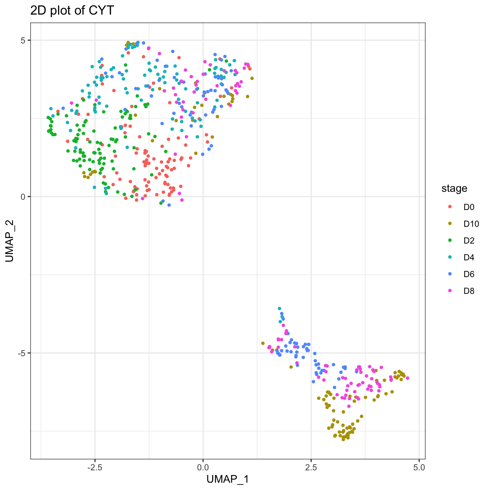
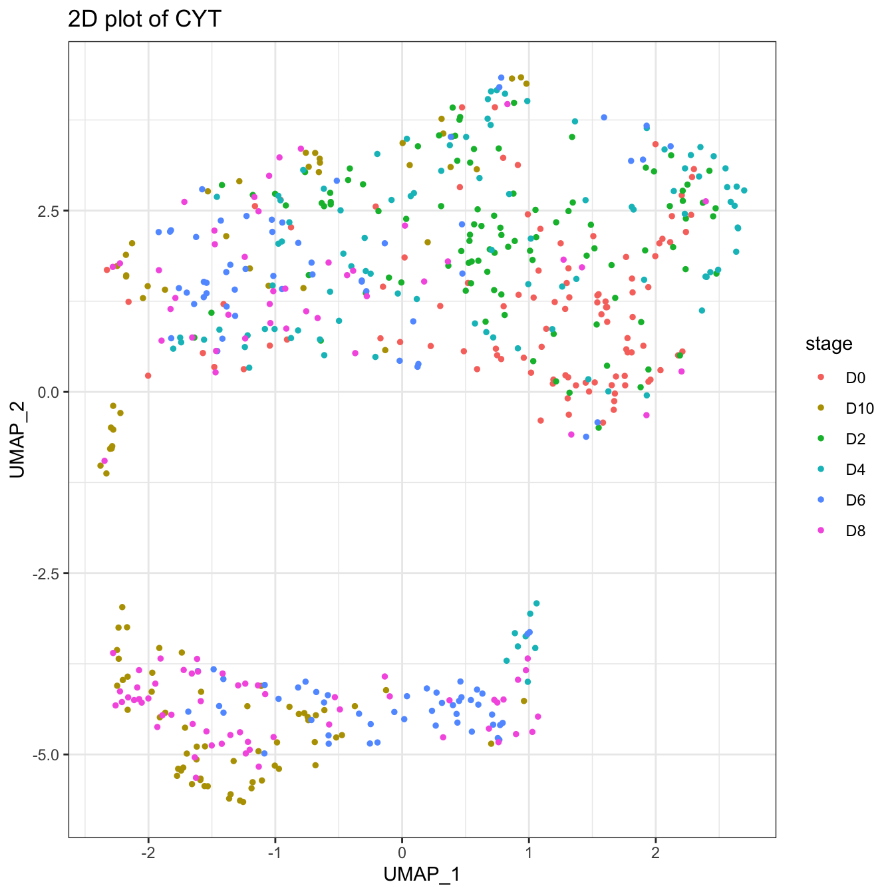
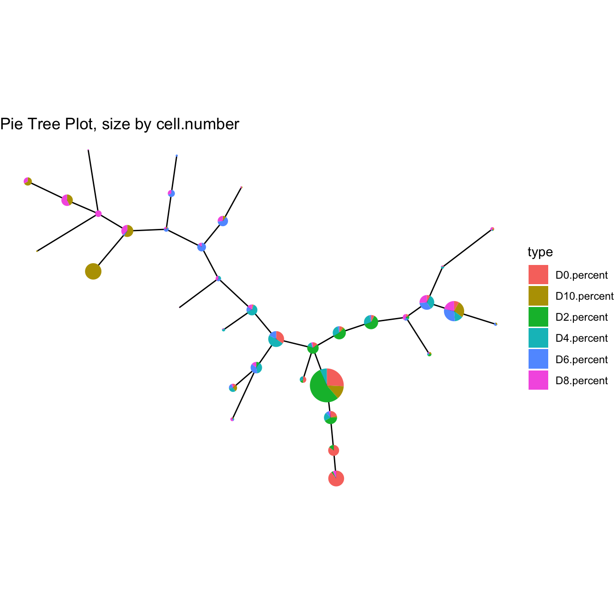
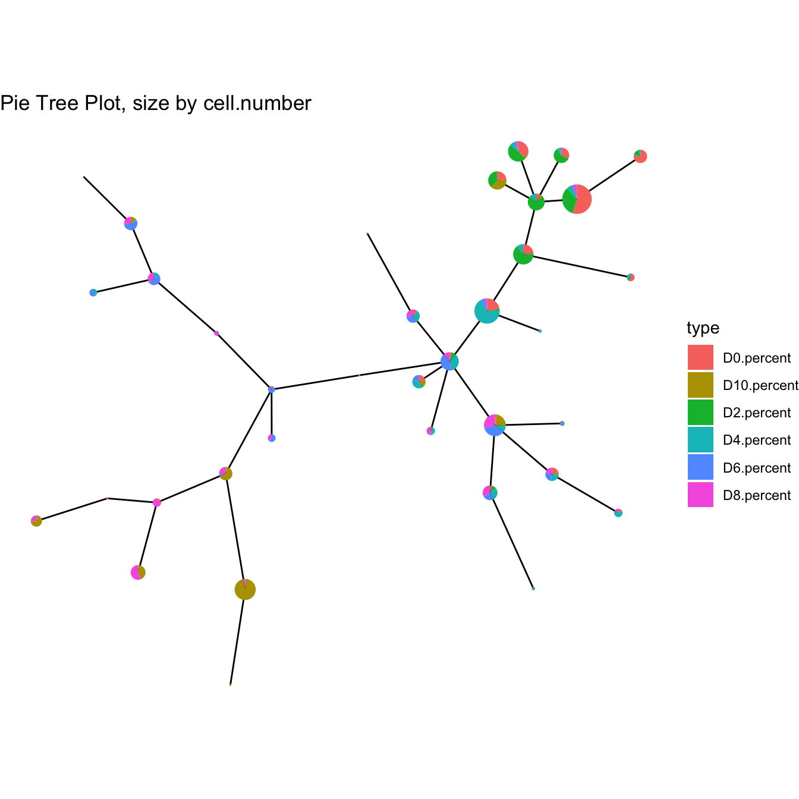

Chapter 6 Advanced Usage
First, we build a CYT object with data in the extended data of CytoTree and build the tree-shaped trajectory.
# Loading packages
suppressMessages({
library(CytoTree)
})
# Read fcs files
fcs.path <- system.file("extdata", package = "CytoTree")
fcs.files <- list.files(fcs.path, pattern = '.FCS$', full = TRUE)
fcs.data <- runExprsMerge(fcs.files, comp = FALSE, transformMethod = "none")
# Refine colnames of fcs data
recol <- c(`FITC-A<CD43>` = "CD43", `APC-A<CD34>` = "CD34",
`BV421-A<CD90>` = "CD90", `BV510-A<CD45RA>` = "CD45RA",
`BV605-A<CD31>` = "CD31", `BV650-A<CD49f>` = "CD49f",
`BV 735-A<CD73>` = "CD73", `BV786-A<CD45>` = "CD45",
`PE-A<FLK1>` = "FLK1", `PE-Cy7-A<CD38>` = "CD38")
colnames(fcs.data)[match(names(recol), colnames(fcs.data))] = recol
fcs.data <- fcs.data[, recol]
# Build the CYT object
cyt <- createCYT(raw.data = fcs.data, normalization.method = "log")
# Run CytoTree as pipeline and visualize as tree
set.seed(1)
cyt <- cyt %>% runCluster() %>% processingCluster() %>%
runFastPCA() %>% runTSNE() %>% runDiffusionMap() %>% runUMAP() %>%
buildTree()
plotPieTree(cyt)
6.1 Fetch meta data
The first advanced usage is to fetch plot meta information of CytoTree.
# Fetch plot meta information for each cell
plot.meta <- fetchPlotMeta(cyt)
knitr::kable(head(plot.meta))
# Fetch plot meta information for each cluster
cluster.meta <- fetchClustMeta(cyt)
knitr::kable(head(cluster.meta))6.2 Add meta data
The second advanced usage of CytoTree is to add meta-information to meta.data
# Old stage back up
plot.meta <- fetchPlotMeta(cyt)
old.stage <- plot.meta$stage
# Add meta-information in CytoTree meta.data
meta.information <- gsub(".FCS.+", "", rownames(fcs.data))
meta.information[!meta.information %in% "D0"] <- "not_D0"
names(meta.information) <- rownames(fcs.data)
# Change stage
cyt <- addMetaData(cyt, meta.info = meta.information, name = "stage")
plotPieTree(cyt)
# Run PCA and view cell information as our new column
cyt <- runFastPCA(cyt)
cyt <- addMetaData(cyt, meta.info = meta.information, name = "Mycol")
plot2D(cyt, color.by = "Mycol", item.use = c("PC_1", "PC_2"))
# Recover old stage
cyt <- addMetaData(cyt, meta.info = old.stage, name = "stage")
plotPieTree(cyt)
6.3 Fetch cells
Fetch cells using fetchCell
# Fetch cells
cell.fetch <- fetchCell(cyt, stage = c("D0", "D10"))6.4 Subset object
# Fetch cells
cell.fetch <- fetchCell(cyt, stage = c("D0", "D10"))
# Subset object
cyt.sub <- subsetCYT(cyt, cells = cell.fetch)
cyt.sub## CYT Information:
## Input cell number: 200 cells
## Enroll marker number: 10 markers
## Cells after downsampling: 200 cells6.5 Batch effect
CytoTree provide function to correcto batch effects based on ComBat in sva R package.
# Correct batch effect in building the CYT object
batch <- gsub(".FCS.+", "", rownames(fcs.data))
batch <- as.numeric(as.factor(batch))
# Build the CYT object without batch correction
cyt <- createCYT(raw.data = fcs.data, normalization.method = "log")
# Run CytoTree as pipeline and visualize as tree
set.seed(1)
cyt <- cyt %>% runCluster() %>% processingCluster() %>%
runFastPCA() %>% runTSNE() %>% runDiffusionMap() %>% runUMAP() %>%
buildTree()
plot2D(cyt, item.use = c("UMAP_1", "UMAP_2"), color.by = "stage")
# Correct batch and re-run the pipeline
cyt <- correctBatchCYT(cyt, batch = batch)
set.seed(1)
cyt <- cyt %>% runCluster() %>% processingCluster() %>%
runFastPCA() %>% runTSNE() %>% runDiffusionMap() %>% runUMAP() %>%
buildTree()
plot2D(cyt, item.use = c("UMAP_1", "UMAP_2"), color.by = "stage")
# Or build the CYT object with batch correction
cyt <- createCYT(raw.data = fcs.data,
batch = batch, batch.correct = TRUE,
normalization.method = "log")
# Run CytoTree as pipeline and visualize as tree
set.seed(1)
cyt <- cyt %>% runCluster() %>% processingCluster() %>%
runFastPCA() %>% runTSNE() %>% runDiffusionMap() %>% runUMAP() %>%
buildTree()
plot2D(cyt, item.use = c("UMAP_1", "UMAP_2"), color.by = "stage")6.6 Change markers
The default option in CytoTee is to use all markers to calculate the tree-shaped trajectory. If we only want to use a subset of markers, for example, the CD Markers, we can use changeMarker to change markers in the calculation or change them in the building of the CYT object.
# Build the CYT object without batch correction
cyt <- createCYT(raw.data = fcs.data, normalization.method = "log")
set.seed(1)
cyt <- cyt %>% runCluster() %>% processingCluster() %>%
buildTree()
plotPieTree(cyt)
# Show all markers
knitr::kable(cyt@markers)| x |
|---|
| CD43 |
| CD34 |
| CD90 |
| CD45RA |
| CD31 |
| CD49f |
| CD73 |
| CD45 |
| FLK1 |
| CD38 |
markers.cal <- c("CD43","CD34","CD90","CD45RA","CD49f","CD45","FLK1","CD38")
# Change markers using changeMarker
# This change will not change the raw.data in CTY object
cyt <- changeMarker(cyt, markers = markers.cal)
set.seed(1)
cyt <- cyt %>% runCluster() %>% processingCluster() %>%
buildTree()
plotPieTree(cyt)
# Or change markers using createCYT
# This change will not change the raw.data in CTY object
cyt <- createCYT(raw.data = fcs.data, markers = markers.cal,
normalization.method = "log")
set.seed(1)
cyt <- cyt %>% runCluster() %>% processingCluster() %>%
buildTree()
plotPieTree(cyt)